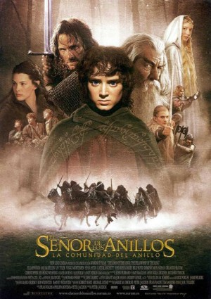
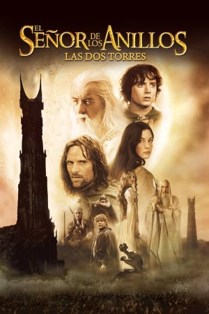
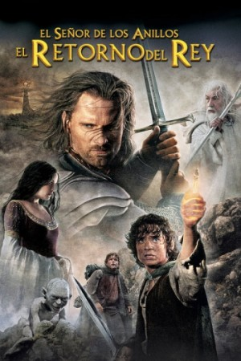

| Título |
La Cominidad del Anillo |
| Director |
Peter Jackson |
| Año |
2001 |
| Productora |
New Line Cinema |
| Actores |
- Hugo Weaving - Elrond
- Elija Wood - Frodo Baggins
- Ian Mckellen - Gandalf
- Liv Tyler - Arwen
- Orlando Bloom - Legolas
- Viggo Mortensen - Aragorn
- Sean Bean - Boromir
- Sean Astin - Sam
- Cate Blanchett - Galadriel
- John Rhys-Davies - Gimli
|
En la Tierra Media, el Señor Oscuro Saurón creó los Grandes Anillos de Poder, forjados por los herreros Elfos.
Tres para los reyes Elfos, siete para los Señores Enanos, y nueve para los Hombres Mortales. Secretamente,
Saurón también forjó un anillo maestro, el Anillo Único, que contiene en sí el poder para esclavizar a toda la Tierra Media.
Con la ayuda de un grupo de amigos y de valientes aliados, Frodo emprende un peligroso viaje con la misión de destruir el Anillo Único.
Pero el Señor Oscuro Sauron, quien creara el Anillo, envía a sus servidores para perseguir al grupo. Si Sauron lograra recuperar el Anillo,
sería el final de la Tierra Media.
Espectacular adaptación, relato épico, un viaje mágico que empieza como un cuento pero pronto se sumerge en un mundo tenebroso
de impecable factura.

| Título |
Las Dos Torres |
| Director |
Peter Jackson |
| Año |
2002 |
| Productora |
New Line Cinema |
| Actores |
- Hugo Weaving - Elrond
- Elija Wood - Frodo Baggins
- Ian Mckellen - Gandalf
- Liv Tyler - Arwen
- Orlando Bloom - Legolas
- Viggo Mortensen - Aragorn
- Sean Bean - Boromir
- Sean Astin - Sam
- Cate Blanchett - Galadriel
- John Rhys-Davies - Gimli
|
La Compañía del Anillo se ha disuelto. El portador del anillo Frodo y su fiel amigo Sam se dirigen hacia Mordor para
destruir el Anillo Único y acabar con el poder de Sauron. Mientras, y tras la dura batalla contra los orcos donde cayó Boromir,
el hombre Aragorn, el elfo Legolas y el enano Gimli intentan rescatar a los medianos Merry y Pipin, secuestrados por los ogros de Mordor.
Por su parte, Saurón y el traidor Sarumán continúan con sus planes en Mordor, en espera de la guerra contra las razas libres de la Tierra Media.
Nunca una película ha sido tan claramente producto del respeto del director hacia su fuente. Jackson pone todo su talento al servicio
de esta reverencia, creando una inusual fusión de cineasta y material.

| Título |
El Retorno del Rey |
| Director |
Peter Jackson |
| Año |
2003 |
| Productora |
New Line Cinema |
| Actores |
- Hugo Weaving - Elrond
- Elija Wood - Frodo Baggins
- Ian Mckellen - Gandalf
- Liv Tyler - Arwen
- Orlando Bloom - Legolas
- Viggo Mortensen - Aragorn
- Sean Bean - Boromir
- Sean Astin - Sam
- Cate Blanchett - Galadriel
- John Rhys-Davies - Gimli
|
Las fuerzas de Saruman han sido destruidas, y su fortaleza sitiada. Ha llegado el momento de que se decida el destino de la Tierra Media,
y por primera vez en mucho tiempo, parece que hay una pequeña esperanza. La atención del señor oscuro Sauron se centra ahora en Gondor,
el último reducto de los hombres, y del cual Aragorn tendrá que reclamar el trono para ocupar su puesto de rey.
Pero las fuerzas de Sauron ya se preparan para lanzar el último y definitivo ataque contra el reino de Gondor,
la batalla que decidirá el destino de todos. Mientras tanto, Frodo y Sam continuan su camino hacia Mordor,
a la espera de que Sauron no repare en que dos pequeños Hobbits se acercan cada día más al final de su camino, el Monte del Destino.
Tercera y última pélica de la saga "El señor de los anillos", para mi es la mejor de las tres porque no es donde concluyen las historias que
hemos ido conociendo durante las películas, sino porque Peter las plasma completamente como yo me las imaginé cuando me leía el libro.